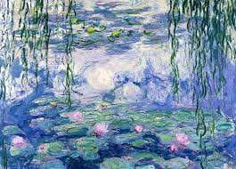

Water Lilies
Description: Claude Monet’s "Water Lilies" series, painted throughout the early 20th century, captures the serene and reflective beauty of his water garden in Giverny, France. In this piece, floating lilies scatter across the canvas, reflecting the sky and trees above. Monet’s soft, dappled brushstrokes blur the boundaries between water and air, creating an almost abstract sense of space. The work invites viewers into a tranquil moment of nature’s harmony, emphasizing color and light over form.